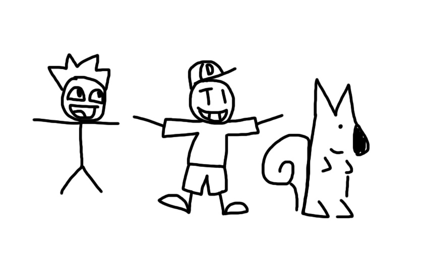

Autobiography
I see you're interested in my upbringing! Well, prepare for the biggest "yap session" of your life, you're gonna be here a while. There's plenty of smaller sub-stories between these categories, this is just the stuff I can explicitly talk about off the top of my head.
Start
This started when I was born. I was a very happy kid, always smiling. Seeing the positive side of life. I was born alongside my two brothers, each two years apart from each other. I grew up with a desire to see how things worked. This involves clogging toilets, writing on the wall, microwaving forks, y'know. Normal kid stuff. (I was quickly disciplined by my parents.) My parents realized right away that I picked up math very early in my life, and I had a love for it. My parents did my best to nuture it, and I was quickly moved into Pre-K. Albeit, I was a very shy and anxious kid. (I CRIED A LOT, ASKED FOR MY MOM). It took a lot of getting used to it, but I eventually started growing into my environment. Do keep in mind it's been quite a few years (21 to be exact, although soon to be 22 (I'm typing this out two days before my 22nd birthday)) so take things with a grain of salt. I started learning how to socialize, and get along with people. A few years of me learning in Elementary School and I was already taking more solid classes.
The Gift
I picked up math extremely quickly, and I was told I was (gifted), although I don't really believe in the idea that people are "gifted" with something. People have their interests, I just happened to love doing math. I was told I could skip a grade relating to math, and/or be put in more advanced classes. I don't recall what exactly came from that, just that I do remember that in specific. Fortunately, it seems I was on a very good path and headway. However, I was still a crybaby. I was very emotional and could hardly control myself mentally. Despite that, I worked very hard on myself as what was always encouraged by my parents. I spent a LOT of time outside, and did tons of exploring and mingling.
Discipline
I made a lot of stupid decisions throughout my life. The first of which was the fact I received a referral for biting someone. She threatened to tell on me (I don't recall the details), and out of an act of desparation I bit her. My parents were LIVID with me, for good reason. They took away my Nintendo DSi for what felt like an eternity, which prompted me to threaten to run away (I wrote a goodbye note and everything). I was very poorly disciplined, but my parents were trying their best. I learned very quickly those were very stupid decisions I made. I made up with her, and continued to learn at Elementary School.
The Internet
I found out that I had an affinity for reading books, too. I read quite a lot and found them to be very fun ways to pass time at the library. However, I also learned about the internet there too. We were allowed thirty minutes of computer time to browse school-mandated websites. I made some more friends talking to them about these websites, and found out about this website called Poptropica. All of the books I had read (and some new stories) were in a playable game-form on this site. I was really excited to learn more about it, and fell in love with the website. I found out there was so much to do, and there were other websites like it. I picked up Club Penguin and had a lot of fun on the website (I had to beg my parents for a membership because I was way too hooked on it).
Discovery of Roblox
Occasionally we'd spend time at our grandparents' house (mother's side) and I got to use my grandpa's desktop to play games. I saw Roblox through an advertisement and got hooked on the game by playing "Welcome to Roblox" building. This was all the way in 2011. It felt so surreal seeing this engine you could build whatever you want, and I had a blast playing all sorts of "Build to Survive" and combat games. I eventually created my own account and started to customize myself so it could represent me. I created another account around the time I was getting my brothers to start playing Roblox with me.
My Best Friends
After my initial discovery of the internet and my excitement of this brand new world, I moved into this school named "Franklin Academy", which was K-8. I met two people that I still remember to this day (especially because one of them was my doppelganger). Mathew and Santiago. We became great friends, and actually started hanging out with each other while we were still getting accustomed to the classroom. We bonded over playing Kirby Battle Royale right there, and had a lot of fun. We all started talking (as our parents talked to each other), and were great friends over many years in Elementary School. I made a lot of friends that I would hang out with outside and (on Roblox) in our personal building servers. Being able to hang out with friends almost 24/7 was a dream come true for me, and my social life couldn't be better.
Epic Comix
During our time there, Me, Santiago, and Mathew founded this comic group based on doodles we'd occasionally annotate onto our homework, and notes. It was called "Epic Comix", and it would feature characters that were prominent within our lives, and our original creations.  Mr. Derp (my drawing) was the leader of this trio, but the other two characters (Mr. Squiggles, and Epic) were very integral to the stories we'd write. We also created these recurring villains that they'd face throughout their adventures, and they'd occasionally show up with some sort of plot to inconvienience the protagonists.  For a while, it was great! Writing comics was a great way to get our creativity out on paper. However, we eventually had to move away (my dad had job opportunities, and it was pretty far from there.) I had to part ways with some of the best people I've ever met. I stepped down from my position, and passed it onto my other friends. We ended moved to the area I've lived in since this day.
For a while, it was great! Writing comics was a great way to get our creativity out on paper. However, we eventually had to move away (my dad had job opportunities, and it was pretty far from there.) I had to part ways with some of the best people I've ever met. I stepped down from my position, and passed it onto my other friends. We ended moved to the area I've lived in since this day.
Middle School
Here, we had separate schools for Elementary and Middle School, which means I had fallen into the Middle School category (as a fresh Sixth Grader). This was my first time (in a while) that I had to meet new people. It was extremely difficult for me to find people, because of how daunting it was all to take in. I spent all that time with people who understood and cared a lot for me. Although, I did have a good first impression getting accustomed to riding a bus to school. I met someone pretty cool. I thought she was a pretty cool person (she shared some bread with me at one point which was pretty cool), so we hung out quite a bit while I was learning about more people. I met a few of her friends, some of which I still maintain contact with to this day! I felt happy I was going to get along with people. Unfortunately, lunch was now divided into blocks which means I wasn't going to be guaranteed to meet people I knew there. However, I did meet someone I found to be very cool. He apparently lived in my neighborhood, which turned out to be ideal! However, he was a little older than me, which means we wouldn't be graduating together. He introduced me to other people that I grew accustomed to, one of them introducing me to Steam and Team Fortress 2. I was hooked on TF2.  I met a lot of my now friends in middle-school, and continued to hang out with them throughout High School, too.
I met a lot of my now friends in middle-school, and continued to hang out with them throughout High School, too.
High School
High-school was a pretty memorable time. Apparently our wave of students were the most chaotic ones they've had. (Probably not a good thing)
-- I'll continue writing this later